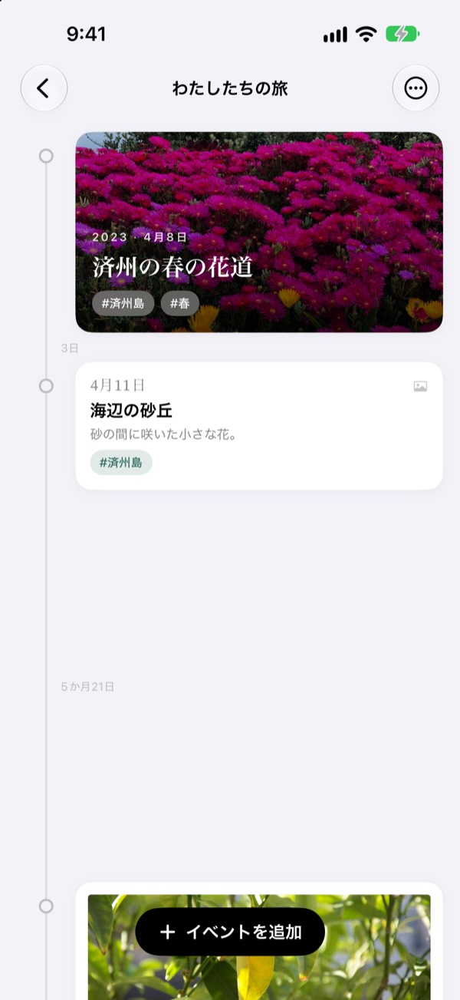
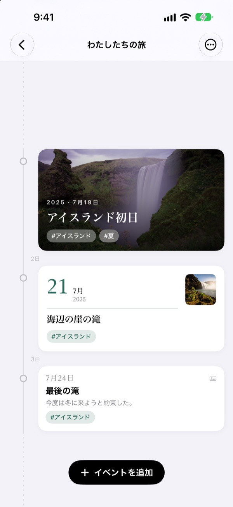
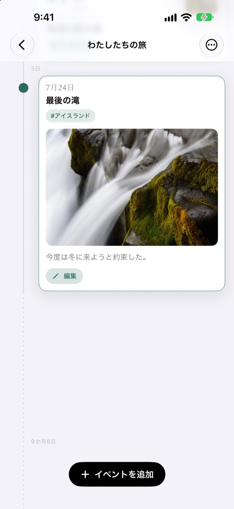
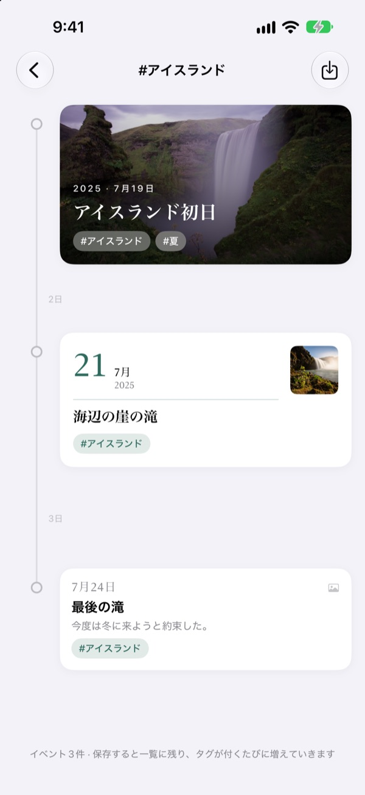
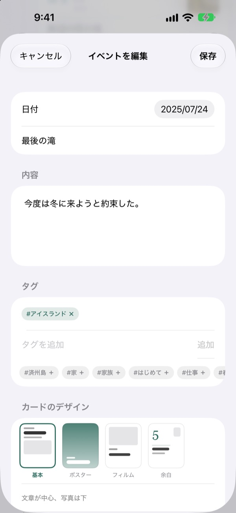

流れた時間のぶんだけ
間があくタイムライン
3日と5日は3対5の間隔に。2年4か月のような長い空白は点線でたたまれます。間隔を見るだけで、そのころの時間の流れがわかります。
すべての機能が無料。iPhoneとiPadで使えます。

間隔を自分で広げてみる
ボタンを押すと、最後の出来事のあとに新しい出来事が加わります。間隔はアプリと同じルールで描いています。
写真アプリをさかのぼっても、時間の長さは見えません
写真ライブラリは日付順に並べるだけで、3日の間も2年の間も同じ1マスです。Yeoulは出来事のあいだに流れた時間のぶんだけ間隔をあけるので、どこが濃くてどこが空いていたのかがひと目でわかります。
間隔が、そのまま流れた時間
タイムライン全体で同じ縮尺を使うので、同じ期間は画面のどこでも同じ長さです。どの間隔にも 3日、5か月21日 のように実際の期間が書かれます。
近すぎる出来事は重ならないよう最小限の間をとり、長すぎる空白は点線でたたみます。

その日に撮った写真を探してくれます
出来事の日付を決めて 関連する写真を探す をタップすると、その日に撮った写真をライブラリから集めます。ぴったりのものがなければ 自分で探す で選べます。
タイムラインの出来事をタップすると、写真と文章がその場で開きます。

タグひとつで、散らばった瞬間が集まる
出来事に #アイスランド のようなタグを付けてタップすると、いくつものタイムラインに散らばった同じタグの出来事が、ひとつのタイムラインにまとまります。
保存すれば一覧に残り、あとから同じタグを付けた出来事も自動で加わります。

出来事ごとに似合うカードを
文章が主役の基本、写真で埋めるポスター、印画紙のようなフィルム、大きな日付が立つ余白。選んだ瞬間にプレビューが変わります。

はじめかたは3ステップ
- 1
タイムラインを作る
子どもの1年目、恋愛、旅行など、テーマごとに名前と色を決めます。
- 2
出来事を追加する
日付とタイトルを書いて、その日の写真を添えます。
- 3
タグを付ける
同じタグの出来事は、タイムラインを越えて集まります。
4つのカードデザイン
- 基本
- 文章が主役で、写真はその下に。
- ポスター
- 写真がカードいっぱいに広がり、大きなタイトルが重なります。写真がなければタイムラインの色で塗られます。
- フィルム
- 印画紙のように余白をとった写真に、タイプライターの文字と日付スタンプ。
- 余白
- 大きな日付の数字が立ち、写真は小さめ。文字が主役です。
新しい出来事は、そのタイムラインでいちばん新しいカードと同じデザインで始まります。
すべての機能が無料です
無料
- タイムラインはいくつでも、名前と色を選べる
- 出来事ごとに写真、文章、タグ
- その日に撮った写真を探す
- タグのタイムラインを保存
- 4つのカードデザイン
- iCloudでiPhoneとiPadを同期
- ショートカットとSiriで記録
開発者を応援する
- 小・中・大の3種類のチップから選べます
- 機能を解放する課金ではありません。感謝の気持ちを届ける場所です
設定画面から、気が向いたときだけどうぞ。
広告もサブスクリプションもありません。
よくある質問
出来事の間隔がばらばらなのはなぜ？
Yeoulは実際に流れた時間のぶんだけ間隔をあけます。すべての間隔に同じ縮尺を使うので、3日と5日は3対5に見えます。近すぎる出来事は重ならないよう最小限の間をとり、長すぎる空白は点線でたたんで、2年4か月のように実際の期間を書き添えます。
その日の写真が出てきません。
日付で写真を探すには、写真へのアクセス許可が必要です。設定 > Yeoul > 写真 でアクセスを許可してください。端末のタイムゾーンで、その日の0時から24時までに撮った写真を探します。許可したくない場合は、すぐ下の 自分で探す からライブラリで選べます。
タグのタイムラインとは？
出来事に付けたタグをタップすると、すべてのタイムラインから同じタグの出来事を集めて、ひとつのタイムラインで見せます。よく見るタグは保存して一覧に置いておけます。出来事をコピーするのではなく集めて見せているだけなので、元の出来事を直せばそのまま反映され、タグのタイムラインを消しても出来事は残ります。
タグのタイムラインに追加ボタンがないのはなぜ？
タグのタイムラインは出来事をしまう場所ではなく、タグで集めて見る画面です。新しい出来事をどのタイムラインに入れるか決められないため、追加はできません。元のタイムラインで出来事を追加してタグを付ければ、ここに自動で集まります。
アプリを開かずに記録できますか？
はい。ショートカットアプリやSiriで イベントを記録 を使えば、タイムラインとタイトルを選ぶだけです。日付を決めなければ、今の時刻で残ります。
ほかの端末でも見られますか？
同じApple AccountでiCloudにサインインしているiPhoneとiPadなら、自動でつながります。設定であなたの名前 > iCloud を開き、iCloudがオンになっているか確認してください。通信状況によっては反映まで少し時間がかかります。
記録を消したいです。
一覧でタイムラインを左にスワイプするか、編集ボタンから削除できます。タイムラインを消すと、中の出来事もいっしょに消えます。iCloudに残ったデータは、設定のiCloudのストレージ管理から削除できます。
記録が開発者に送られることは？
ありません。記録と写真は端末とご自身のiCloudにだけ保存され、開発者が見ることはできません。くわしくは下のプライバシーポリシーをご覧ください。
不具合の報告や機能の要望はどこへ？
アプリの設定画面からそのまま送れます。メールやInstagram（@lee25_ios）でも受け付けています。端末の機種とiOSのバージョン、どんな状況だったかを書いていただけると、早く対応できます。
ご質問やご意見は leeo@kakao.com までお寄せください。